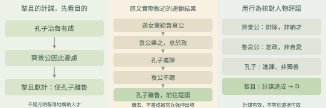
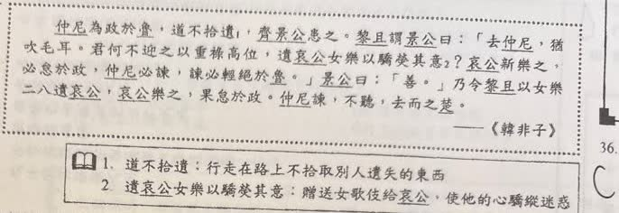
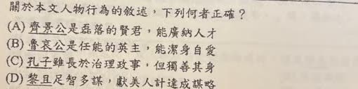

分享原卷｜第35題
完整原題
作答所需文章／材料
仲尼為政於魯，道不拾遺，齊景公患之。黎且謂景公曰：「去仲尼，猶吹毛耳。君何不迎之以重祿高位，遺哀公女樂以驕熒其意？哀公新樂之，必怠於政，仲尼必諫，諫必輕絕於魯。」景公曰：「善。」乃令黎且以女樂二八遺哀公，哀公樂之，果怠於政。仲尼諫，不聽，去而之楚。 ——《韓非子》 【原題註釋】 1. 道不拾遺：行走在路上不拾取別人遺失的東西。 2. 遺哀公女樂以驕熒其意：贈送女歌伎給哀公，使他的心驕縱迷惑。 【字詞】遺：贈送。女樂：女歌舞表演者。二八：十六。先想一想，再查看答案、解說與原圖
逐項解析
| 選項與原句 | 判讀 | 句意與判斷理由 |
|---|---|---|
| (A) 齊景公是磊落的賢君，能廣納人才 | 不選 | 齊景公因孔子治理魯國有成而憂慮，採計排除孔子，不是光明正大延攬人才。 |
| (B) 魯哀公是任能的英主，能潔身自愛 | 不選 | 魯哀公受女樂引誘而怠政，不符合潔身自愛的描述。 |
| (C) 孔子雖長於治理政事，但獨善其身 | 不選 | 孔子積極治理並進諫，不是只顧自我修養而不問政事。 |
| (D) 黎且足智多謀，獻美人計達成謀略 | 應選 | 黎且預判事件發展，以女樂使魯君怠政，最後達到孔子離去的目的。 |
詳細說明與解題步驟
【全段白話】
孔子在魯國治理政事，風氣好到路不拾遺，齊景公對此感到憂慮。黎且說，要使孔子離開並不難，並向齊景公提出用厚祿高位迎請孔子、送女樂使魯哀公驕縱享樂的計策。魯哀公一旦喜歡新的娛樂，就會怠慢政務；孔子必定進諫，屆時就會被疏遠排斥。
齊景公採納，命黎且送去十六名女樂。魯哀公果然沉迷、怠政；孔子進諫不被聽從，便離開前往楚國。
【詞句對象】
「迎之以重祿高位」的「之」承前指仲尼，是用厚祿高位迎請孔子；女樂的受贈者則是魯哀公。這些是黎且提出的建議，下文明寫實施的是送女樂，沒有說迎請孔子已成功。
【核對哪個人的行為符合敘述】
黎且預先設想送女樂、君主怠政、孔子進諫受排斥的連鎖結果，後來按計畫實現，故D符合本文。這是描述其謀略有效，不表示肯定計謀的道德。
齊景公是想排除孔子，而不是磊落納才；魯哀公因女樂荒廢政務，不是潔身自愛；孔子治理政事並屢次進諫，也不是只求獨善其身。

① 齊景公憂慮魯治，黎且要排除孔子
孔子在魯國治理有成，齊景公卻感到憂慮。黎且出計策的目的是使孔子離開魯國，因此不能把齊景公說成光明磊落、廣納人才；要從文中行動看動機。
② 送女樂、君主怠政、進諫不聽、孔子離去
原文寫黎且送女樂，魯哀公享樂而怠政；孔子進諫不被聽從，便離開前往楚國。把這條連鎖結果按順序連起來，就能看出黎且預想的排除孔子目的確實達成。
③ D符合計謀達成，不是肯定計謀道德
魯哀公沉迷而怠政，不是潔身自愛；孔子治理並進諫，也不是只顧獨善其身。黎且的計謀按預想實現，所以D符合本文。描述計謀有效，與讚許做法正當，是兩回事。
④ 按原文的目的與結果，核對人物評語
答案 D：黎且獻計，達成使孔子離去的目的
- 先看計策的目的，再追蹤行為與結果。
- 魯君怠政，孔子進諫不聽後離去。
- D描述謀略有效，沒有要求肯定其道德。
核對註記：已依原卷或完整文字核對並獨立解題；對應教材課次未確認，歸綜合。
原圖（僅本題）

